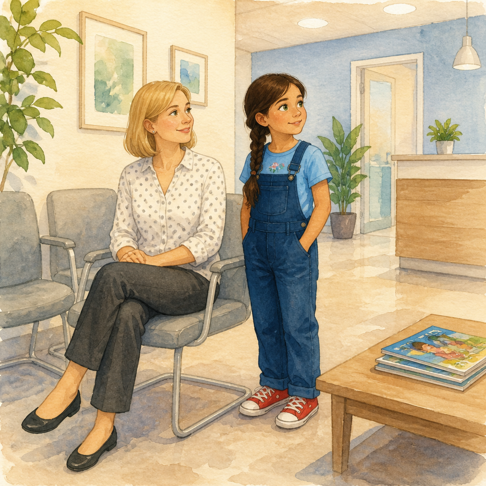
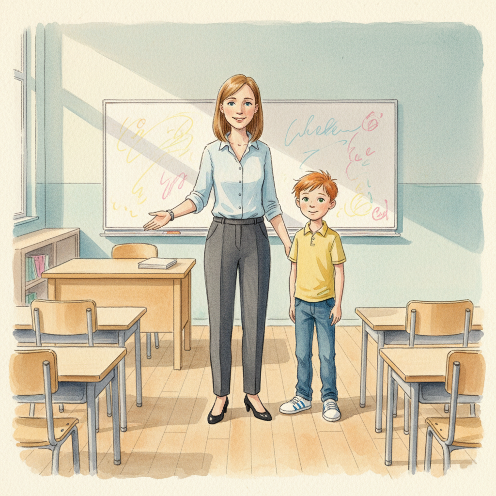
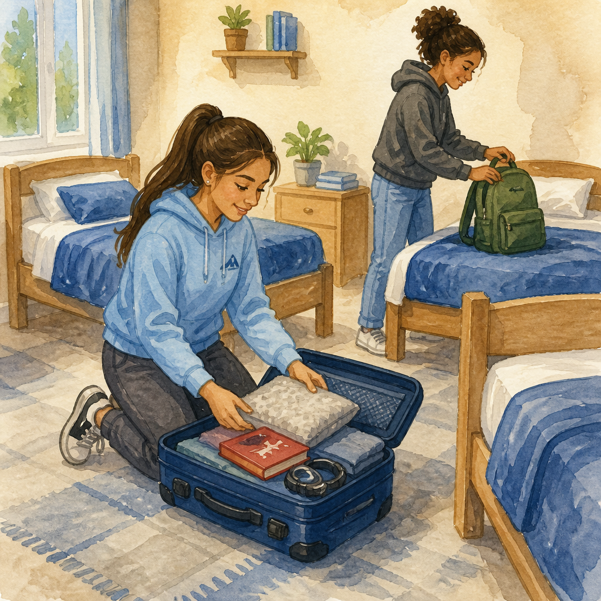
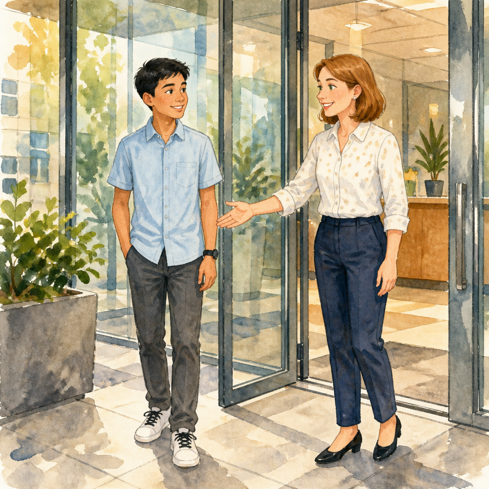

Besuch beim Zahnarzt
Was passiert in der Praxis? Vom Wartezimmer über das Behandlungszimmer bis zur Untersuchung — mit ehrlich benannten Geräuschen und Lichtverhältnissen.
Lesen →Kurze, sensorisch ehrliche Geschichten, die autistische Kinder, Jugendliche und Erwachsene konkret auf eine Alltagssituation vorbereiten. Geschrieben nach der Methode von Carol Gray — mit klarer Ich-Perspektive, Präsens, sensorischen Details und ohne Belehrung.
Für Kinder bis etwa 6 Jahre. Sehr kurze Sätze, viel Wiederholung, viel sensorische Beschreibung.
Hier entstehen bald Geschichten. Schau gerne wieder rein.
Für Kinder im Alter von etwa 6 bis 12 Jahren. Klare Sätze, Schritt-für-Schritt-Erklärungen.

Was passiert in der Praxis? Vom Wartezimmer über das Behandlungszimmer bis zur Untersuchung — mit ehrlich benannten Geräuschen und Lichtverhältnissen.
Lesen →
Ein neues Kind kommt in die vertraute Klasse. Was sich ändert, was gleich bleibt — und wie sich Veränderung im Bauch anfühlen kann.
Lesen →Für 12- bis 18-Jährige. Längere Sätze, Fachbegriffe erklärt, erwachsenere Ansprache.

Drei Tage Jugendherberge — fremdes Bett, Gemeinschaftsbad, lauter Speisesaal. Mit konkreten Strategien für Überreizung und vertrauten Dingen von zu Hause.
Lesen →
Übergang Schule → Berufsleben. Vom Empfang an der Pforte über erste Aufgaben bis zur Mittagspause. Mit konkretem Frage-Skript für Unklarheiten.
Lesen →Für 18- bis etwa 30-Jährige. Erwachsene Ansprache ohne Verniedlichung.
Hier entstehen bald Geschichten. Schau gerne wieder rein.
Sachlich, selbstbestimmt formuliert. Für 30 Jahre und älter.
Hier entstehen bald Geschichten. Schau gerne wieder rein.
Alle Geschichten sind mit KI-Unterstützung nach der Carol-Gray-Methode erstellt und auf Plausibilität geprüft.